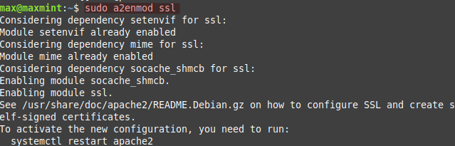
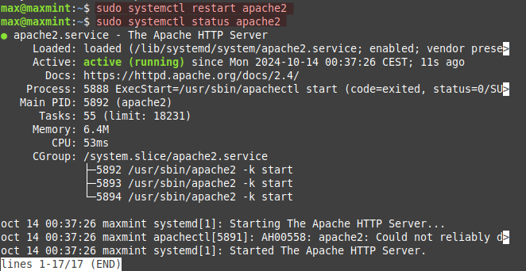
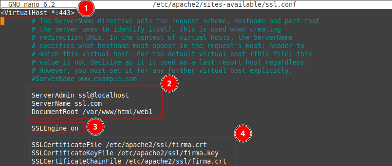
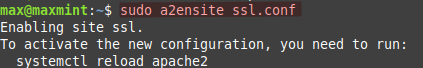
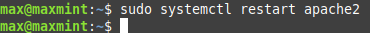
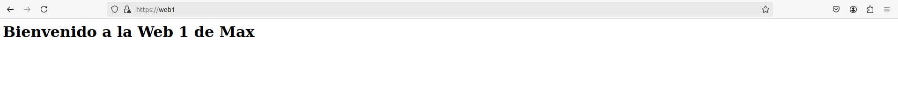
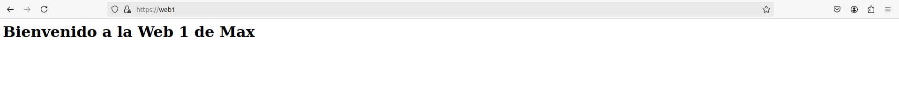

Práctica 2. Certificado SSL/TLS¶
Objetivos
- Crear un certificado SSL/TLS autofirmado con la herramienta openssl.
- Configurar el servidor web Apache para que utilice el certificado SSL/TLS autofirmado.
Instalar OpenSSL¶
Es necessario realizar la instalación de OpenSSLpara generar las claves y el certificado.
sudo apt install openssl -y
Crear un Certificado SSL Autofirmado¶
-
Crear un directorio para almacenar el certificado
sudo mkdir /etc/apache2/ssl
-
Generar el certificado SSL y la clave privada:
sudo openssl req -x509 -nodes -days 365 -newkey rsa:2048 -keyout /etc/apache2/ssl/firma.key -out /etc/apache2/ssl/firma.crt

Configurar Apache para usar SSL¶
-
Habilitar los módulos SSL en Apache
sudo a2enmod ssl
-
Reinicio del servicio
Apachey comprobación de su estado
-
Duplicamos el archivo de configuración de Apache
sudo cp /etc/apache2/sites-available/000-default.conf /etc/apache2/sites-available/ssl.conf
Editar archivo configuración para SSL¶
-
Editamos el archivo de configuración copiado anteriormente.
sudo nano /etc/apache2/sites-available/ssl.conf -
Modificar el archivo de configuración

Cambiamos la configuración para que escuche en el puerto 443, añadir las directivas SSL y apuntamos a la web1 de la práctica anterior.
Habilitar el nuevo sitio SSL¶
- Habilitar el nuevo archivo de configuración

sudo a2ensite ssl.conf
Reiniciar servicio Apache2¶
Es necesario el reinicio del servicio para que los cambios se vean.
sudo systemctl restart apache2

Comprobación Web con SSL¶
Acceso por https con éxito
 

- Certificado SSL visualizado desde el navegador